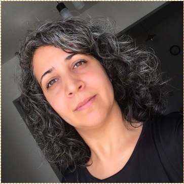

Easy travel es una empresa formada en el 2022 por alumnos de la tecnicatura de Desarrollo Web y Aplicaciones Digitales, con el fin de fomentar el tourismo de cabotaje e internacional, brindando una plataforma sencilla y práctica al usuario para poder elegir y comprar sus viajes o experiencias de acuerdo a sus gustos o intereses.

Anahí Nicoli
Rol: Scrum master/Programación front end-diseño
Categoría Profesional: Programadora Front End y diseñadora.
Responsabilidad:
Acompañar al equipo durante el transcurso del proyecto para concretarlo cumpliento con los tiempos y requerimientos. / Generar una propuesta de diseño teniendo en cuenta los requerimientos del cliente buscando un equilibro entre diseño y acceso. Colaborar con la interfaz gráfica-visual y funcionamiento acorde lo requerido por el equipo de diseño y backend de la empresa.
Juan Gabriel Soto Valenzuela
Rol: Coordinador SoftSkill - Programación Django
Categoría Profesional: Programador Backend
Plasmar en el sitio la interfaz gráfica-visual y funcionamiento acorde lo requerido por el equipo de diseño y backend de la empresa.
Patricia Alejandra Solis
Rol: Analista en gestión
Categoría Profesional: Analista Programador
Toma de requerimientos, asistir en diseñar y programar la interfaz grafica (GUI)
Misión
Nuestra misión es proporcionar a nuestros clientes un servicio excepcional, satisfaciendo sus necesidades de viaje y superando sus expectativas.
Visión
Como empresa, nos esforzamos por convertirnos en el referente en el sector del turismo, ofreciendo calidad, innovación y excelencia en cada experiencia de viaje.
Politicas de Privacidad
En Easytravel, nos tomamos muy en serio la privacidad de nuestros clientes. Puedes revisar nuestras políticas de privacidad completas en el siguiente enlace: Políticas de privacidad